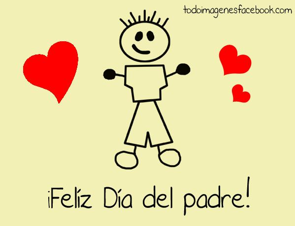

♡ Gracias Papá por todos estos años de sacrificio, de entrega y de pasión. ♡ Gracias Padre por ser mi mayor ejemplo y gracias Padre por ser mi mejor inspiración.
♡ Padre no es justo que haya solo un día en el año dedicado a ti, cuando tú me dedicas a mí, los 365 días del año.
♡ Mi Padre ha sido para mí, más sabio que cualquier maestro y más fiel que cualquier amigo, como el nadie en el mundo ha existido.
♡ No lo presumo con nadie, ni se lo confieso a cualquiera, pero sé que el mejor Padre del mundo, es el que yo tengo, el que la vida me dio.
♡ Gracias Padre por ser mi mayor ejemplo y gracias Padre por ser mi mejor inspiración.